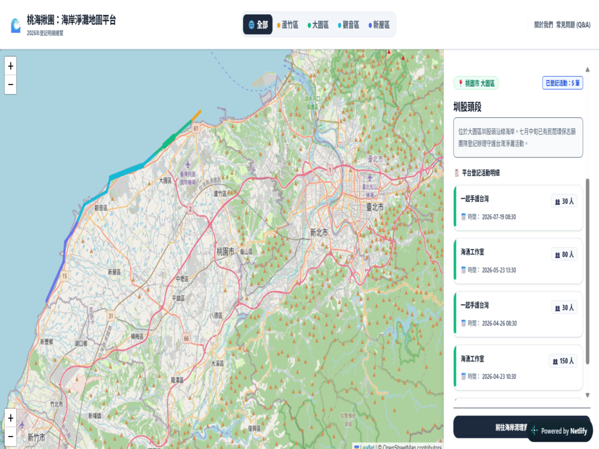

服務學習
網頁製作
淨灘與數位地圖平台製作
在管理學服務學習專案中，我發現網路上淨灘資訊繁雜，所以決定縮小範圍並動手實踐。我深入桃園新屋海岸參與實地清理，並嘗試由 AI 工具輔助，將資料進行整理並建置互動式網頁。
我的具體分工與收穫
- 前往新屋蚵間海岸實地淨灘，記錄垃圾種類與分布情形。
- 蒐集並篩選網路上的淨灘資訊，搭配 AI 工具整理成互動式地圖網頁。
- 學會發現問題、實地行動再將所學融入生活，解決問題。
成果與佐證
-
淨灘數位地圖網站：https://courageous-tapioca-696ce6.netlify.app/

- 活動合照：查看大圖